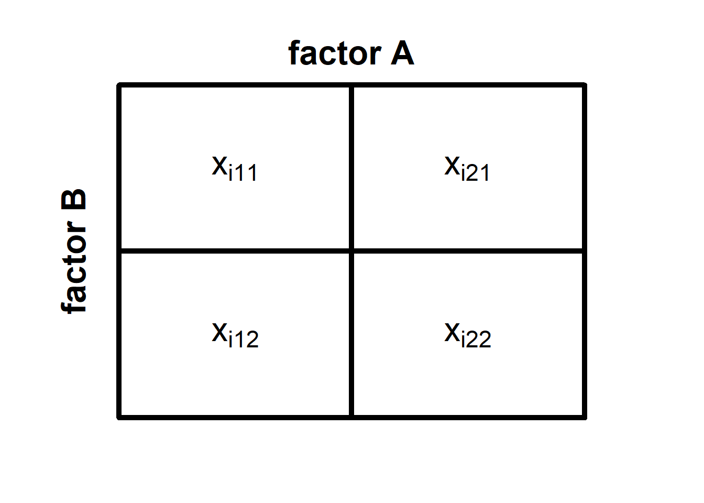
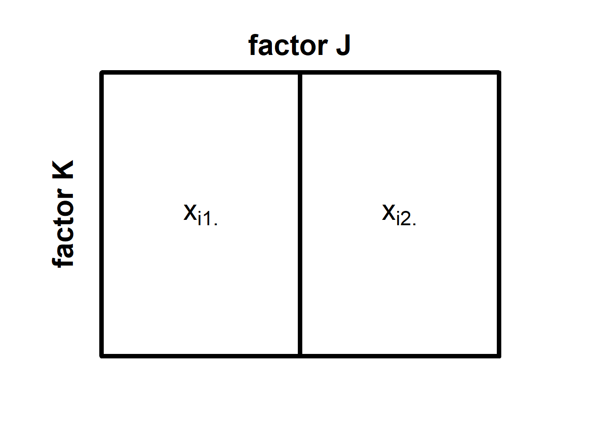

The two-factorial ANOVA
The two-factorial analysis of variance (ANOVA) in an extension of the one-factorial ANOVA. It allows us to test how the mean of a continuous variable differs as a function of two categorical variables \(A\) and \(B\). In a two-factorial ANOVA, we can not only test for the independent effects of the two variables on the outcome, but also a possible interaction of the two variables \(A \times B\). Here, interaction means that the magnitude and/or direction of the effect of one of the variables depends on the level of the second variable.
A two-factorial design requires that the two variables \(A\) and \(B\) are “crossed”. That means that each level of the first factor \(A\) must be combined with each level of the second second factor \(B\). If \(A\) has three levels and \(B\) has two levels, our design has a total of 6 cells, and we would refer to it as a \(3 \times 2\)-design.
If we ensure, in addition, that all cells of our design have the same sample size, we call our design orthogonal. Orthogonality is not required for running a two-factorial ANOVA, but it comes with an advantage: equal sample sizes make the ANOVA robust against violating the assumption of equal variances.
General logic of the two-factorial ANOVA
The model underlying the two-factorial ANOVA looks like this:
\[\mu_{jk} = \mu+\alpha_j+\beta_k+\gamma_{jk}\] Here, \(\mu_{jk}\) is the true mean or a combination of the \(j\)th level of factor \(A\) and the \(kth\) level of factor \(B\), \(\mu\) is the true grand mean (i.e., the population mean across all groups), \(\alpha_j\) is the true effect of the \(j\)th level of factor \(A\), \(\beta_k\) is the true effect of the \(k\)th level of factor \(B\), and \(\gamma_{jk}\) is the true effect of combining the \(j\)th level of \(A\) with the \(k\)th level of \(B\) that goes beyond the independent contributions of the two factors (\(\alpha_j\) and \(\beta_k\)).
Just as with the one-factorial ANOVA, its two-factorial cousin partitions the variance of the outcome variable \(\sigma_x^2\) into signal and noise. The signal is the variance that stems from differences between groups, and the noise is the variance that is due to differences within the groups. Here, too, we can simplify the partition of variances by partitioning the sums of squares instead. As with the one-factorial ANOVA, we can state that:
\[SS_{total} = SS_{between} + SS_{within}\]
The difference to the one-factorial ANVOA is that we can now partition the signal (the \(SS_{between}\)) even further. Specifically, we can partition the variability between groups into variability that is due to the first factor \(A\), variability that is due to the second factor \(B\), and variability that results from the interaction of the two factors \(A \times B\). We can state this formally as follows:
\[SS_{between} = SS_A + SS_B + SS_{A \times B}\]
Let’s have a closer look at the sums of squares using a simplest possible example, namely the \(2 \times 2\)-design, in which factor \(A\) has \(J = 2\) levels, and factor \(B\) also has \(K=2\) levels. We can think of this design as a squares divided into four parts (see below):
In each of the four cells of this \(2 \times 2\) design, there are \(n_{jk}\) many observations of the outcome variable \(x\), where \(n_{jk}\) is the sample size in the cell formed by the \(j\)th level of \(A\) and the \(k\)th level of \(B\). We denote individual observations as \(x_{ijk}\), which refers to the \(i\)th observation in the cell formed b the \(j\)th level of \(A\) and the \(k\)th level of \(B\).
When we want to partition the sum of squares in a two-factorial design, we first need to compute the total sum of squares. We do so, by collapsing across all cells of our design and summing the squared deviations of all observations from the grand mean \(\bar{x}\) (i.e., the mean computed across all observations irrespective of which cell they stem from). We can formalise this as:
\[SS_{total} = \sum_{j=1}^{J} \sum_{k=1}^{K} \sum_{i=1}^{n_{jk}} (x_{ijk}-\bar{x})^2\] The next step is computing \(SS_{between}\) by pretending that there is no variance within groups. Computing the \(SS_{between}\) works similar to the one-factorial ANOVA. That means, we replace each observation \(x_{ijk}\) with the mean of its cell \(\bar{x}_{jk}\) before computing the sum of the squared deviations from the grand mean \(\bar{x}_{jk}\).
\[SS_{between} = \sum_{j=1}^{J} \sum_{k=1}^{K} n_{jk} \times (\bar{x}_{jk} - \bar{x})^2\] Computing the \(SS_{within}\) is also similar to the one-factorial ANOVA. We pretend that there is no variation between groups by replacing the grand mean \(\bar{x}\) with the cell means \(\bar{x}_{jk}\) in the formula for the total sum of squares.
\[SS_{within} = \sum_{j=1}^{J} \sum_{k=1}^{K} \sum_{i = 1}^{n_{jk}} (x_{ijk} - \bar{x}_{jk})\]
So far, so good. We have now partitioned \(SS_{total}\) into the \(SS_{between}\) and the \(SS_{within}\). However, since we have a \(2 \times 2\)-design, we are not merely interested in whether there is substantial variation between the groups, but also where this variation originates. Thus, we need to partition the sums of squares further.
We first compute \(SS_A\), that is, the variation that is solely due to differences in factor \(A\). We do so by pretending that a) there is no factor \(B\), and b) there is no variation within cells. The latter is necessary because \(SS_A\) is part of \(SS_{between}\). The good thing is that we already know how to do it, namely by replacing individual observations with a mean score. But how do we pretend that there is no factor \(B\)? Effectively, we collapse across all levels of \(B\) and combine them into one big cell for each level of \(A\). Here is what our \(2 \times 2\)-design would look like in our minds now:

We now denote the individual observations as \(x_{ij\cdot}\). The little dot reminds us that there was originally another factor \(B\) across which we have now collapsed the cells of our design. To obtain \(SS_A\), we now need to replace all individual observations with their respective cell means respective cell means \(\bar{x}_{j\cdot}\) and then compute the sum of their squared deviations from the grand mean \(\bar{x}\) .
\[SS_A = \sum_{j=1}^{J} n_{j\cdot}(\bar{x}_{j\cdot}-\bar{x})^2 \] Here, \(n_{j\cdot}\) refers to the number of observations for the \(j\)th level of factor \(A\) (irrespective of the level of factor \(B\)).
We can now compute the \(SS_B\) in a similar fashion, namely by pretending that a) there is no factor \(A\), and b) there is no variation within cells. Our imagined design now looks like this:

We note denote individual observations as \(x_{i\cdot k}\) to emphasize that we do not consider which level of \(A\) an observation stems from. Accordingly, the cell means are now denoted as \(\bar{x}_{\cdot k}\). The \(SS_B\) are formally defined as:
\[SS_B = \sum_{k=1}^{K} n_{\cdot k}(\bar{x}_{\cdot k}-\bar{x})^2 \]
Finally, we need to compute the variability that is due to the interaction of \(A\) and \(B\). The simplest way to do so is to subtract the newly computed \(SS_A\) and \(SS_B\) from \(SS_{between}\):
\(SS_{A \times B} = SS_{between} - SS_A - SS_B\)
If we run a two-factorial ANOVA, we no longer need the \(SS_{between}\) because its parts, \(SS_A\), \(SS_B\), and \(SS_{a \times B}\) contain all the variation between groups. The next step is to test each component of the between-group variation for statistical significance. The logic is similar to that of the one-factorial ANOVA, that is, we test for significant using an \(F\)-statistic.
Since we have three possible sources of between-group variability, we will run three tests: one for the main effect of factor \(A\), one for the main effect of factor \(B\), and one for the interaction effect \(a \times B\). For each of these tests, we need to compute the mean squares of the effect we are interested in and divide it by the \(MS_within\). We can obtain \(MS_A\), \(MS_B\), \(MS_{A \times B}\), and \(MS_within\) by dividing the respective sum of squares by its degrees of freedom (see below).
\[MS_A = \frac{SS_A}{J-1}\] \[MS_B = \frac{SS_B}{K-1}\]
\[MS_{A\times B} = \frac{SS_{A\times B}}{(J-1)(K-1)}\] \[MS_{within} = \frac{SS_{within}}{N-J\times K}\]
The main effect of factor A
Let’s first look at the test for the main effect of \(A\). The \(F\)-statistic looks as follows:
\[\frac{MS_A}{MS_{wihtin}} \sim F_{J-1;N-J\times K}\] We use it to test the following hypotheses:
\(H_{0_A}: \alpha_j = 0 \quad \forall j\)
\(H_{1_A}: \lnot H_{0_A}\)
Remember that \(\alpha_j\) is the true effect of the \(j\)th level of \(A\), which means that:
\(\mu_{j\cdot} = \mu+\alpha_j\)
In other words, when we add \(\alpha_j\) to the overall population mean \(\mu\) (the true value of \(\bar{x}\)), we obtain the expectancy of the mean for the \(j\)th level of \(A\) (collapsed over all levels of \(B\)).
The main effect of factor B
Regarding the main effect of \(B\), this is what the \(F\)-statistic look:
\[\frac{MS_B}{MS_{wihtin}} \sim F_{K-1;N-J\times K}\] The corresponding hypotheses are:
\(H_{0_B}: \beta_k = 0 \quad \forall k\)
\(H_{1_B}: \lnot H_{0_B}\)
Again, \(\beta_k\) is the true effect of the \(k\)th level of B. We can state that:
\(\mu_{\cdot k} = \mu + \beta_k\)
This means that adding \(\beta_k\) to the true population mean \(\mu\) will result in the expected mean of the \(k\)th level of factor \(B\) (collapsed across all levels of \(A\)).
The interaction of A and B
The \(F\)-statistic for the interaction effect \(A \times B\) is defined as follows:
\[\frac{MS_{A \times B}}{MS_{wihtin}} \sim F_{(J-1)(K-1);N-J\times K}\]
We use this \(F\)-statistic to test the final hypothesis, which is very similar to the main effect hypotheses:
\(H_{0_{A \times B}}: \gamma_{A \times B} = 0 \quad \forall j,k\)
\(H_{1_{A \times B}}: \lnot H_{0_{A\times B}}\)
As mentioned above, \(\gamma_{jk}\) is the effect that combining the \(j\)th level of \(A\) and the \(k\)th level of \(B\) has on the population mean \(\mu\) beyond the respective main effects \(\alpha_j\) and \(\beta_k\). We define \(\gamma_{A \times B}\) such that:
\[\mu_{jk} = \mu + \alpha_j + \beta_k + \gamma_{jk} = 0\]
This means that when we look at individual cells of our design instead of collapsing across rows or columns, we can obtain the respective true cell mean \(\mu_{jk}\) by taking the true grand mean \(\mu\) and adding not only \(\alpha_j\) and \(\beta_k\) but also \(\gamma_{jk}\).
Running a two-factorial ANOVA in R
When we want to run a two-factorial ANOVA in R, we can use the same package and function we used for the one-factorial case. That is, we use the aov_ez function of the package afex. Before we can run the analysis, we first need data from a two-factorial design.
Let’s say, we have data from an experimental \(2 \times 2\)-design in which we manipulated two factors: job demands (low vs. high) and autonomy (low. vs. high). The dependent variable is the experienced level of job stress. Let’s further assume that we have gathered data from 50 participants in each of the four cells of our design and stored it in a data frame called “my_df”. Here is an except of the data.
ID demands control stress
1 1 low low 112
2 2 low high 79
3 3 high low 134
4 4 high high 76
5 5 low low 114
6 6 low high 129The difference to a one-factorial ANOVA is that we need to feed the aov_ez function a vector containing two variable names as its between argument (in the one-factorial case it was a single character value). Here is what the syntax looks like:
# load library afex
library(afex)
# run a two-factorial ANOVA with demands and control as the
# independent variables and stress as the dependent variable
my_ANOVA = aov_ez(id = 'ID', between = c('demands', 'control'),
dv = 'stress', data = my_df)
# display the results of the ANOVA
my_ANOVARunning this code will create an ANOVA object called “my_ANOVA” in the environment and then display the results of the analysis in the console. Here is what the output looks like:
Contrasts set to contr.sum for the following variables: demands, controlAnova Table (Type 3 tests)
Response: stress
Effect df MSE F ges p.value
1 demands 1, 196 455.82 43.92 *** .183 <.001
2 control 1, 196 455.82 20.02 *** .093 <.001
3 demands:control 1, 196 455.82 4.15 * .021 .043
---
Signif. codes: 0 '***' 0.001 '**' 0.01 '*' 0.05 '+' 0.1 ' ' 1As we can see, the output is an ANOVA table. R tells us that the tests are based on type-3 sums of squares and tells us what the outcome variable was in our analysis (stress). The table itself contains three effects: a main effect of demands (the first variable we entered as a between-subjects factor), a main effect of control (the second between-subjects factor), and the interaction of the two variables denoted by “demands:control” (in R, the colon often indicates an interaction effect).
For each effect, R displays the numerator and denominator degrees of freedom, the \(MS_within\) (they are necessarily equal for all three effects), the \(F\)-value, an estimate of the effect size \(\eta^2\), and the \(p\)-value. In our example, all three effects are statistically significant. Statistically speaking, we can now reject all of the Null hypotheses, that is, we would conclude that the level of demands has an effect on stress, that the level of control has an effect on stress, and that there is an interaction of the two variables.
Disentangling effects in a two-factorial ANOVA
Similar to the one-factorial ANOVA, the tests we run in a two-factorial ANOVA are unspecific in the sense that they do not tell us which means differ from one another. However, disentangling effect in two-factorial ANOVAs is non-trivial. Which effects we need to disentangle and how we go about it depends on a) whether there is a significant interaction and b) how many levels our factors have.
Interactions and the interpretation of main effects
Let’s first consider what difference it makes whether there is a significant interaction. In order to do that, we first need to consider what a main effect is in a two-factor ANOVA. Here, we must distinguish between the statistical main effect as returned by the ANOVA and an actual main effect in the psychological sense. We speak of an actual main effect if the order of the levels of one factor holds across all levels of the other factor. For example, in a \(2 \times 2\)-design, we would speak of a main effect of factor \(A\) if the first level of \(A\) was associated with higher (or lower) scores than its second level, irrespective of whether we look at the first or the second level of factor \(B\).
Here is the problem: because the statistical main effect of a factor in an ANOVA is computed by collapsing across the levels of the other factor, there are different patterns that produce a significant mean difference but do not satisfy the condition described in the previous paragraph. When can those pattern occur? The answer is: when there is an interaction of the two factors.
What does this mean for us? First for the easy case in which there is no interaction. If the interaction effect is not significant, we cannot accept \(H_{1_{A\times B}}\). That means we retain \(H_{0_{A\times B}}\) for now (without believing that it is true because the non-significant finding is uninformative). Retaining \(H_{0_{A\times B}}\) implies that if there are any significant main effects in the ANOVA, we can interpret them as is and disentangle them similar to effects in a one-factorial ANOVA.
Now let’s assume that we found a significant interaction effect. This is where things become difficult. Let’s look at a few graphs to understand this issue better. All of the situations below constitute cases where an ANOVA would show a significant interaction an two significant main effects However, not all of these situations permit us to interpret the data in terms of actual main effects.
 In this first case, we can see that there is an interaction because the lines to not run parallel. We can also see that there are main effects of factors \(A\) and \(B\). The main effect of factor \(A\) becomes evident from the marginal means \(\bar{x}_{j\cdot}\), which we can derive by averaging across the blue and orange points for each level of \(A\). As we can see from the right side of the graph, there is a considerable distance between the two means \(\bar{x}_{1\cdot}\) and \(\bar{x}_{2\cdot}\). This difference is the main effect of factor \(A\) in the \(2\times 2\) ANOVA. We can also see from the left side of the graph that the two marginal means \(\bar{x}_{\cdot 1}\) and \(\bar{x}_{\cdot 2}\) differ (we can obtain them by taking the averages of the same-coloured points). This is the main effect of factor \(B\).
In this first case, we can see that there is an interaction because the lines to not run parallel. We can also see that there are main effects of factors \(A\) and \(B\). The main effect of factor \(A\) becomes evident from the marginal means \(\bar{x}_{j\cdot}\), which we can derive by averaging across the blue and orange points for each level of \(A\). As we can see from the right side of the graph, there is a considerable distance between the two means \(\bar{x}_{1\cdot}\) and \(\bar{x}_{2\cdot}\). This difference is the main effect of factor \(A\) in the \(2\times 2\) ANOVA. We can also see from the left side of the graph that the two marginal means \(\bar{x}_{\cdot 1}\) and \(\bar{x}_{\cdot 2}\) differ (we can obtain them by taking the averages of the same-coloured points). This is the main effect of factor \(B\).
Importantly, despite the interaction effect, the order of the factor levels does not change. We call this an ordinal interaction. Irrespective of the level of factor \(B\), we obtain higher values when the level of factor \(A\) is \(j=2\) instead of \(j=1\). Similarly, irrespective of the level of factor \(A\), values are higher when factor \(B\)’s level is \(k=2\) instead of \(k=1\). Therefore, we can interpret the statistical main effects as actual main effects and state that the level of our dependent variables is generally higher for one level of factor \(A\) than for the other. Similarly, we can state that the values are generally higher for on level of factor \(B\) than for the other.
So far, so good. Now lets’ look at the next case.

In this scenario, an ANOVA would also show an interaction effect (non-parallel lines) and two main effects (evidenced by differences between the marginal means). The difference to the previous scenario is the effect of factor \(A\) when we fix factor \(B\) at level \(k=2\). This effect is a flat line. Although the values differ slightly, the pattern for factor \(B\) remains similar with \(k=2\) yielding higher values of the dependent variable than \(k=1\) irrespective of the level of factor \(A\). We call this type of interaction semi-disordinal because order is only maintained for one factor and not inverted for the other. How does this change our interpretation of the main effect?
We would still state that the values are generally higher for on level of factor \(B\) than for the other. However, we cannot state the same for factor \(A\). As we can see, whether one level of \(A\) is associated with higher levels of the dependent variable in conditional on the level of factor \(B\). We see an effect fo factor \(A\) when we fix \(B\) at level \(k=1\), but if we fix it at \(k=2\) instead, there is no longer a difference between the two levels of factor \(A\). Therefore, we cannot interpret the data as showing an actual main effect of factor \(A\) even though this effect may show up in the ANOVA.
Let’s now look at the third scenario.

As in the previous scenarios, an ANOVA would show a significant interaction (non-parallel lines) and two main effects (see the marginal means). This time, both factor’s main effects are conditional on the level of the other factor. Factor \(A\) only has an effect on the dependent variable if we fix factor \(B\) at level \(k=1\), and factor B only has an effect when factor \(A\)’s level is \(j=2\). In this case, we cannot interpret either of the two significant main effects in the ANOVA as actual main effect. Note that although order is maintained nor neither factor, we would still consider this a semi-disordinal interaction because there is no inversion of the factor’s order.
Now for the grand finale:
 Again, an ANOVA would tell us that there is a significant interaction and two significant main effects. However, as we can see, the notion of main effects is maximally misleading here. If we look at factor \(A\), we will see that its effect can be positive (in the sense that it leads to higher levels of the dependent variable), or it can be negative. Whether the effect is positive or negative depends on the level of factor \(B\). The same is true for factor \(B\). Whether this factor has a positive or negative effect on the level of the dependent variable depends on the level of factor \(A\). We call this a disordinal interaction because the order of factor levels (in terms of which has the higher values of the dependent variable) reverses for each factor depending on the levels of the other factor. This means that - similar to the previous scenario - we cannot interpret the statistical main effects to be actual main effects.
Again, an ANOVA would tell us that there is a significant interaction and two significant main effects. However, as we can see, the notion of main effects is maximally misleading here. If we look at factor \(A\), we will see that its effect can be positive (in the sense that it leads to higher levels of the dependent variable), or it can be negative. Whether the effect is positive or negative depends on the level of factor \(B\). The same is true for factor \(B\). Whether this factor has a positive or negative effect on the level of the dependent variable depends on the level of factor \(A\). We call this a disordinal interaction because the order of factor levels (in terms of which has the higher values of the dependent variable) reverses for each factor depending on the levels of the other factor. This means that - similar to the previous scenario - we cannot interpret the statistical main effects to be actual main effects.
The bottom line here is that we should only bother disentangling actual main effects and not any main effect that is statistically significant in a 2-factorial ANOVA.
This means that we should disentangle main effects only if there is no evidence of an interaction or if the interaction is ordinal.
Disentangling main effects
Let’s first consider the disentangling of main effects (assuming that there is no significant interaction or an ordinal interaction). When a factor has only two levels, the case is clear, because the difference must be between those two levels.
If we have three or more levels, we need to disentangle the main effect in the same way we disentangled them in a one-factorial case. That means we can run pairwise comparisons or custom contrasts on that factor’s marginal means (i.e., collapsing across all levels of the other factor) using the emmeans function from the package emmeans.
In our example from far above, the factor “demands” has only two levels, but we can still use the data to show how the syntax and output would look like:
# load library emmeans
library(emmeans)
# pairwise comparisons on the demands factor with Bonferroni correction
emmeans(object = my_ANOVA, specs = 'demands',
contr = 'pairwise', adjust = 'bonferroni')Running the code above will yield the following console output:
NOTE: Results may be misleading due to involvement in interactions$emmeans
demands emmean SE df lower.CL upper.CL
low 99.9 2.13 196 95.7 104
high 119.9 2.13 196 115.7 124
Results are averaged over the levels of: control
Confidence level used: 0.95
$contrasts
contrast estimate SE df t.ratio p.value
low - high -20 3.02 196 -6.627 <.0001
Results are averaged over the levels of: control Similar to the one-factorial case, the output will consist of two tables, with the second of them containing the desired information. In this case, we have only one entry here because the factor “demands” has only two levels (however, the logic of the post-hoc comparisons would not differ from the one-factorial case had we more than two levels).
There are two few things worth noting: First, when we feed the the emmeans a single variable as its specs argument, the output will contain a message stating that we collapsed across the other factor (in our case “control”). Thus, we know that we are talking about the marginal means of the “demands”. Second, when we call the emmeans function on a main effect in an ANOVA design with at least two factors, R will also return a message informing us that the results of our pairwise comparisons may be misleading due to involvement in potential interactions (we already know this by now).
Since we have two factors in a \(2 \times 2\)-design, we need to consider that we may have two significant interpretable main effects. Generally speaking, we need to disentangle each significant main effect via its marginal means, granted that the interaction pattern (absent or ordinal interaction) permits it.
Disentangling interactions
If a \(2 \times 2\)-ANOVA reveals a significant interaction, we need to disentangle it. The reason is that - as we have seen from the different graphs above - there are various patterns that can produce an interaction effect, and we need to identify which one lead to the significant interaction. If the interaction is not significant, there is - of course - no need to disentangle the effect.
Before we try to answer the question how to disentangle an interaction effect, it helps to understand better what we actually test when testing an interaction effect. The best way to do that is to have a look at the contrasts underlying the tests of main effects and interaction in a \(2 \times 2\) ANOVA. Note that we need to turn our two-factorial design into a one-factorial design for the purpose of defining the contrasts. The contrasts for the three tests look as follows:
| \(j=1\); \(k=1\) | \(j=2\), \(k=1\) | \(j=1\); \(k=2\) | \(j=2\); \(k=2\) | |
|---|---|---|---|---|
| main effect of \(A\) | 1 | -1 | 1 | -1 |
| main effect of \(B\) | 1 | 1 | -1 | -1 |
| interaction effect | 1 | -1 | -1 | 1 |
Let’s digest this. For the main effect of \(A\), we can see that we compare the marginal means of its two levels because we average across the two levels of factor \(B\). Likewise, we can see that are comparing the marginal means of \(B\) because we average across both levels of \(A\). Finally, and most importantly, we can see what the interaction contrast does. It tests whether the difference between the two levels of \(A\) when \(B\) is fixed at \(k=1\) differs from the the same difference when \(B\) is fixed at \(k=2\). This is equivalent to testing whether the difference between the two levels of \(B\) when \(A\) is fixed at \(j=1\) differ from the difference between the two levels of \(B\) when \(A\) is fixed at \(j=2\).
We can now see the analogy between the two-factorial ANOVA and the one-factorial ANOVA.
Disentangling a main effect in a two-factorial ANOVA is like disentangling an effect in a one-factorial ANOVA, the only difference being that we use the respective factor’s marginal means instead of cell means.
Disentangling the interaction is also similar to disentangling an effect in a one-factorial ANOVA, the only difference being that we use the mean differences between the two factors instead of cell means.
We can easily verify that using the contrasts specified above leads to the same results as running the ANOVA, provided that we do not adjust the p-values for multiple comparisons. Let’s quickly recap the ANOVA results from our simulated experiment on job demands and control. Here is the ANOVA output.
Anova Table (Type 3 tests)
Response: stress
Effect df MSE F ges p.value
1 demands 1, 196 455.82 43.92 *** .183 <.001
2 control 1, 196 455.82 20.02 *** .093 <.001
3 demands:control 1, 196 455.82 4.15 * .021 .043
---
Signif. codes: 0 '***' 0.001 '**' 0.01 '*' 0.05 '+' 0.1 ' ' 1Now let’s run a custom contrast analysis on the ANOVA object using emmeans and coapre it to the ANOVA results. Here is the syntax:
# analyse contrasts for main effects and interactions in a 2x2
# ANOVA without correcting for type-I error inflation
emmeans(object = my_ANOVA, specs = c('demands', 'control'),
contr = list(
demands = c(1,-1,1,-1),
control = c(1,1,-1,-1),
interaction = c(1,-1,-1,1)),
adjust = 'none')Here is the output:
$emmeans
demands control emmean SE df lower.CL upper.CL
low low 103.6 3.02 196 97.6 110
high low 129.7 3.02 196 123.8 136
low high 96.2 3.02 196 90.3 102
high high 110.1 3.02 196 104.1 116
Confidence level used: 0.95
$contrasts
contrast estimate SE df t.ratio p.value
demands -40.0 6.04 196 -6.627 <.0001
control 27.0 6.04 196 4.475 <.0001
interaction -12.3 6.04 196 -2.037 0.0430When we compare the ANOVA results to the results of the custom contrast analysis, we can see that there is only one difference. The ANOVA uses \(F\)-statistics whereas the contrasts are analysed using \(t\)-statistics. The \(F\)-values reported in the ANOVA are the exact squares of the corresponding \(t\)-values, and while the \(p\)-values of the two main effects are too small to compare them visually between the two analyses, we can see that the \(p\)-value of the interaction effect is the same.
What do we do with this knowledge? First of all, we know now what we can state once an interaction in a two-factorial ANOVA is significant: there is a difference of differences. Put differently, we know now that the magnitude of the effects of \(A\) and \(B\) differ depending on which level of the other factor we look at. This knowledge in mind, we can now start to disentangle the interaction by looking at the simple effects.
A simple effect is the main effect of one factor when fixing the other factor at a specific level. In a \(2 \times 2\)-ANOVA, there are four simple effects:
- the effect of \(A\) when \(B\) is fixed at \(k=1\)
- the effect of \(A\) when \(B\) is fixed at \(k=2\)
- the effect of \(B\) when \(A\) is fixed at \(j=1\)
- the effect of \(B\) when \(A\) is fixed at \(j=2\)
In order to understand how a significant interaction effect came about, we need to inspect all four of these simple effects. It may come as no surprise that we will do so using custom contrasts. Here is what the contrast weights would look like:
| \(j=1\); \(k=1\) | \(j=2\), \(k=1\) | \(j=1\); \(k=2\) | \(j=2\); \(k=2\) | |
|---|---|---|---|---|
| simple effect of \(A\) for \(k=1\) | 1 | -1 | 0 | 0 |
| simple effect of \(A\) for \(k=2\) | 0 | 0 | 1 | -1 |
| simple effect of \(B\) for \(j=1\) | 1 | 0 | -1 | 0 |
| simple effect of \(B\) for \(j=2\) | 0 | 1 | 0 | -1 |
As we an see, simple effects are a subset of the pairwise comparisons. Now let’s have a look at the syntax for the simple effect analysis:
# analysis of the simple effects using custom contrasts
emmeans(object = my_ANOVA, specs = c('demands', 'control'),
contr = list(
demands_for_low_control = c(1, -1, 0, 0),
demands_for_high_control = c(0, 0, 1, -1),
control_for_low_demands = c(1, 0, -1, 0),
control_for_high_demands = c(0, 1, 0, -1)
))Here is what the output looks like:
$emmeans
demands control emmean SE df lower.CL upper.CL
low low 103.6 3.02 196 97.6 110
high low 129.7 3.02 196 123.8 136
low high 96.2 3.02 196 90.3 102
high high 110.1 3.02 196 104.1 116
Confidence level used: 0.95
$contrasts
contrast estimate SE df t.ratio p.value
demands_for_low_control -26.16 4.27 196 -6.127 <.0001
demands_for_high_control -13.86 4.27 196 -3.246 0.0014
control_for_low_demands 7.36 4.27 196 1.724 0.0863
control_for_high_demands 19.66 4.27 196 4.604 <.0001As we can see, all but one of the simple effects are significant. Since the output also shows an estimate of the contrast value for each of the simple effect contrasts, we can now interpret the interaction pattern.
Here is a valid interpretation: there is an interaction because the effect of job demands on stress is greater when control is low than when it is high.
Another valid interpretation: there is an interaction because control has an effect on stress when job demands are high, but this effect is weaker when demands are low to the extant that we cannot say based on the data whether it still exists.
As we can see, we can interpret the interaction from the viewpoint of both factors. Which interpretation we need to choose depends on the specific nature of our interaction hypothesis.
Disentangling interactions in two-factorial ANOVAs with more than two levels
As soon as our design has at least one factor with three or more levels, we need one more step to make sense of the interaction. Let’s consider - for the sake of simplicity - the case of a \(2 \times 3\)-ANOVA that yields a significant interaction effect. Now, an analysis of the simple effects is not straightforward because one factor has three levels. While we can easily inspect the simple effect of the two-level factor for all three levels of the other factor, we do not know which pairwise comparison to focus on for the three-level factor.
To narrow things down, we need to remember what exactly an interaction test does: to test for differences between differences. In a \(2 \times 3\)-design, this boils down to computing the difference between the two levels of first factor and testing whether this difference (the effect of factor \(A\)) differs as a function of the second factor (the one with three levels). Since we now have three levels of factor \(B\), there are three possible pairwise comparisons for the effect of \(A\). The effect of \(A\) could differ between the first and second level of \(B\), between its first and third level, or between the second and third level. Of course, it is also possible that two or even all three of these pairwise comparisons point toward differences.
Why is this pairwise comparisons of differences relevant? It allows us to decompose the overall interaction effect into smaller parts that we already know how to handle, namely \(2 \times 2\)-interactions. Once we know, which of the three possible \(2 \times 2\)-interactions in our \(2 \times 3\)-design is significant, we can then proceed by disentangling them in the way described above, namely by inspecting the simple effects.